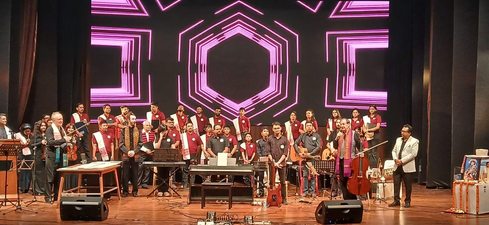
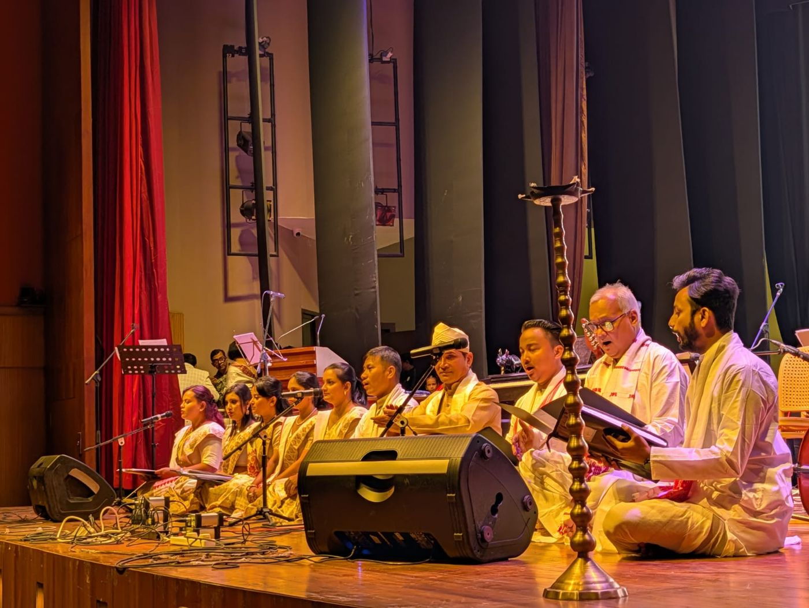
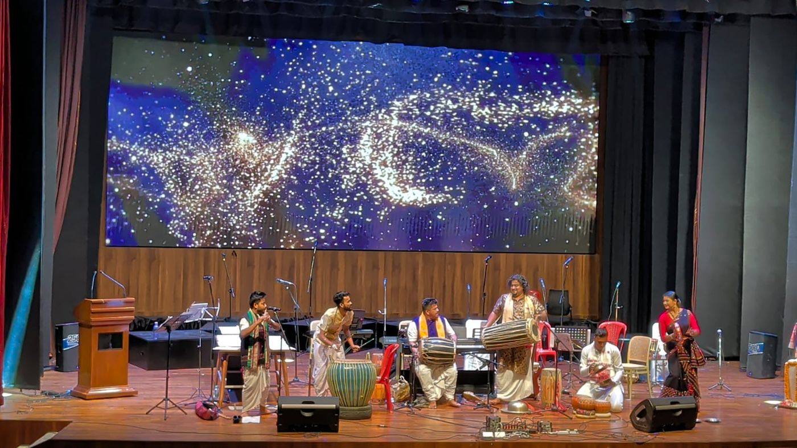
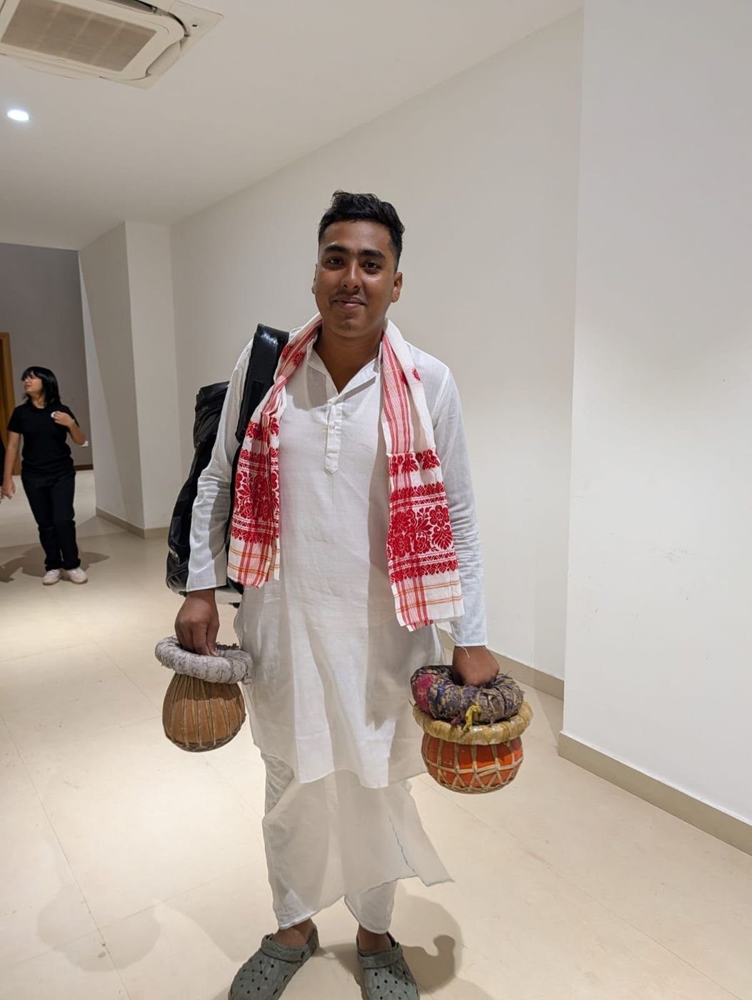
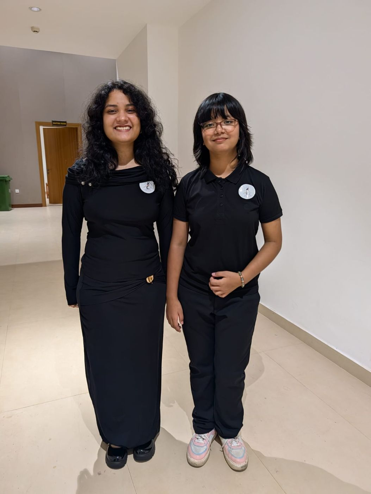
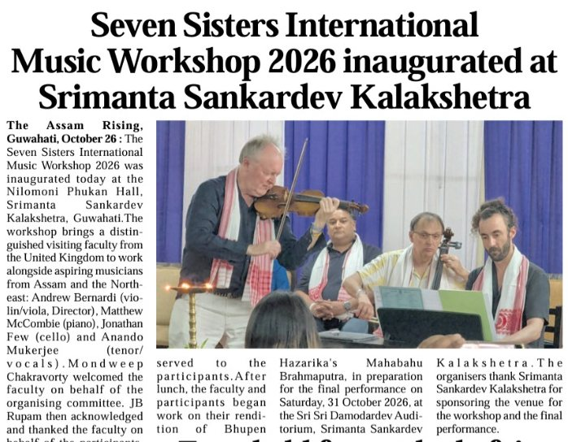
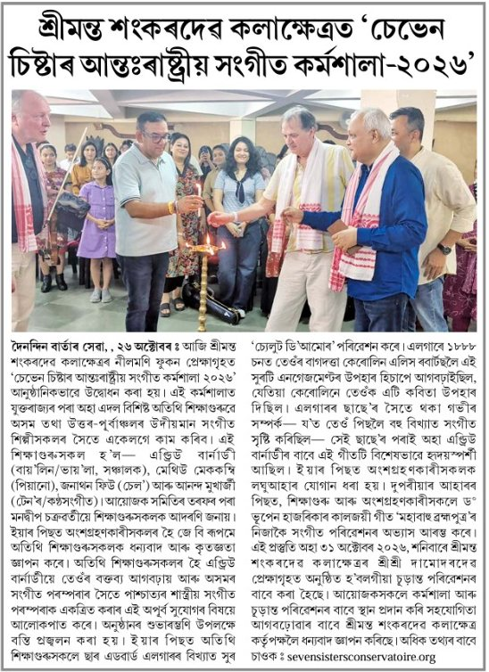
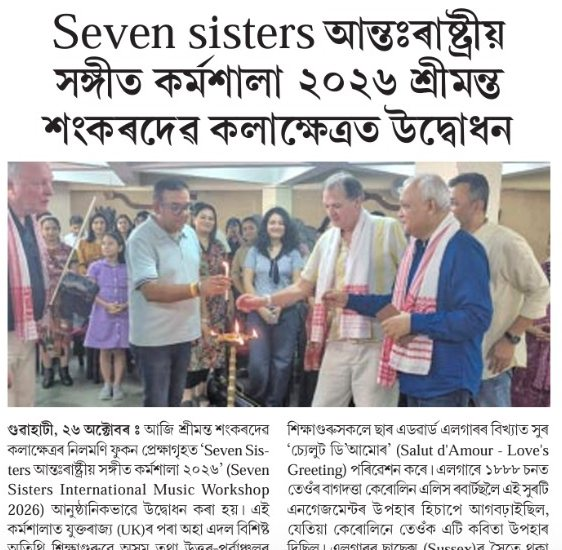

The first Seven Sisters International Music Workshop brought young musicians from across North East India together with international faculty at Srimanta Sankardeva Kalakshetra, ending in a public final performance on Saturday 31 October. Watch the performances, see the photographs and read the coverage below.
The full set from the final performance, in one playlist. Use the playlist button in the player to jump between pieces.





The workshop and final performance were covered on television, online and in print across Assam, and shared by the Hon’ble Chief Minister of Assam, Dr Himanta Biswa Sarma. More from the week is on our Facebook page.
Television report · watch on YouTube
Television report · watch on YouTube
Shared by the Hon’ble Chief Minister of Assam
On screen & online
In print · 27 October 2026



The October workshop is the start of a longer programme of music education for young people across the Seven Sisters states. A second workshop is being proposed for May 2027.
Hear first about the May 2027 workshop and future programmes. Register your interest →
Universities, institutions and sponsors who would like to be part of what comes next: hello@sevensistersconservatoire.org